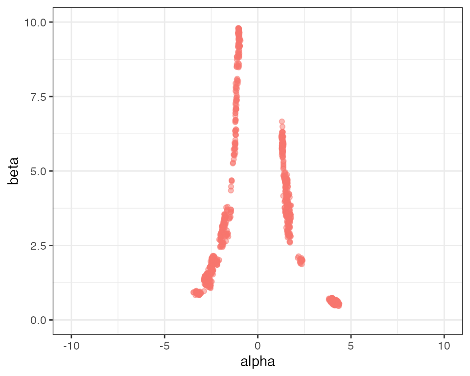
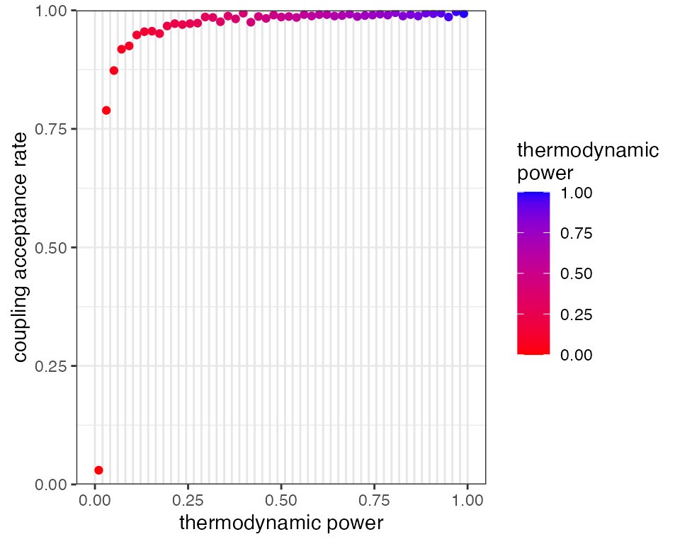
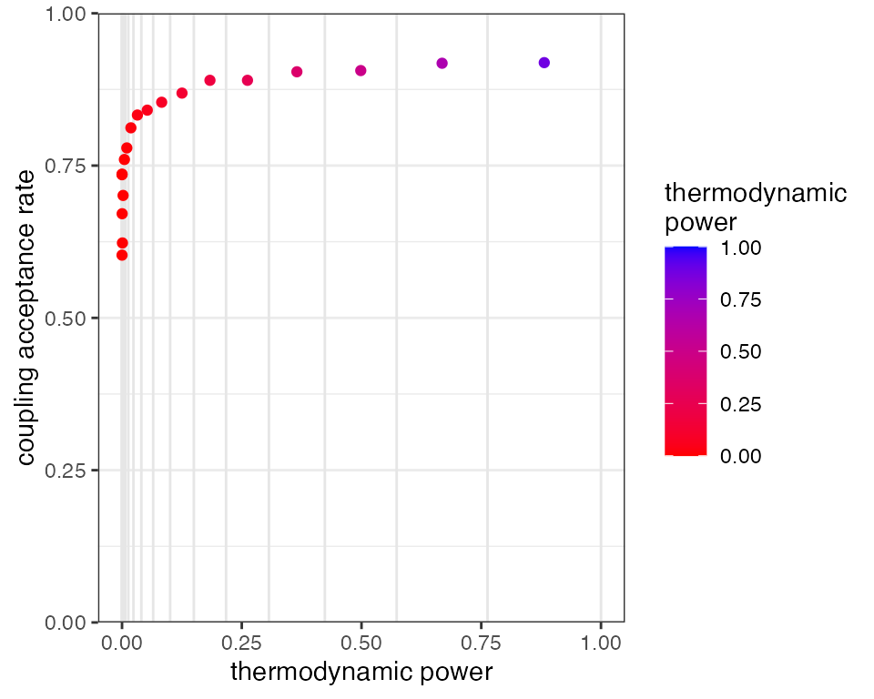

Metropolis Coupling
Bob Verity and Pete Winskill
2019-05-31
metropolis_coupling.RmdWriting a good MCMC becomes considerably harder when the posterior distribution is 1) highly correlated, and/or 2) highly multimodal. For exampe, if your posterior has twin peaks then ordinary Metropolis-Hastings might not be enough. Hamiltonian Monte Carlo (HMC) can help with correlated distributions, as it allows the proposal particle to “roll around” the target distribution allowing it to go round corners, but it still struggles with multimodal distributions, as it is unlikely that the particle will have enough momentum to cross deep valleys in the likelihood. Metropolis coupling, on the other hand, tends to mitigate both problems and requires nothing more than some extra chains. Note that this is separate from the concept of running multiple chains to diagnose performance, which is dealt with in a separate vignette.
This vignette demonstrates how Metropolis coupling can be implemented within drjacoby to solve a deliberately awkward MCMC problem.
Setup
For this example we will start by writing the likelihood and prior functions in C++. If this sounds unfamiliar to you, check out the earlier vignette for a simple example. Our basic model will assume that our data are normally distributed with mean alpha^2*beta. The alpha^2 term here means that both positive and negative values of alpha map to the same value, thereby creating a multimodal distribution, and the *beta term ensures that alpha and beta are highly correlated. We will also use a third parameter epsilon to represent some random noise that we want to integrate over. While this example is a bit contrived, it does have the advantage of being horrendously awkward!
# define cpp loglike function
loglike <- "SEXP loglike(std::vector<double> params, std::vector<double> x) {
// extract parameters
double alpha = params[0];
double beta = params[1];
double epsilon = params[2];
int n = int(x.size());
// sum log-likelihood over all data
double mean = alpha*alpha*beta + epsilon;
double ret = 0.0;
for (int i = 0; i < n; ++i) {
ret += -0.5*log(2*M_PI) - (x[i] - mean)*(x[i] - mean)/2.0;
}
// return as SEXP
return Rcpp::wrap(ret);
}"For our prior we assume that alpha is uniform [-10,10], beta is uniform [0,10], and epsilon is normally distributed with mean 0 and standard deviation 1.
# define cpp logprior function
logprior <- "SEXP logprior(std::vector<double> params){
// extract parameters
double epsilon = params[2];
// calculate logprior
double ret = -log(20.0) - log(10) - 0.5*log(2*M_PI) - epsilon*epsilon/2.0;
// return as SEXP
return Rcpp::wrap(ret);
}"As always, we need to define a dataframe of parameters so that drjacoby knows what parameter ranges to expect:
# define parameters dataframe
df_params <- data.frame(name = c("alpha", "beta", "epsilon"),
min = c(-10, 0, -Inf),
max = c(10, 10, Inf),
init = c(5, 5, 0))Finally, we need some data. For simplicity we will use a series of draws from a normal distribution with mean 10:
Running the MCMC
First, we will try running the basic MCMC without Metropolis coupling. The following block of code repeats the same MCMC analysis nine times, each time producing a plot of posterior alpha against beta:
# create base plot object
plot_base <- ggplot2::ggplot() + ggplot2::theme_bw() + ggplot2::coord_cartesian(xlim = c(-10,10), ylim = c(0,10))
# repeat analysis multiple times
plot_list <- list()
for (i in 1:9) {
# run MCMC
mcmc_out <- run_mcmc(data = x,
df_params = df_params,
loglike = loglike,
logprior = logprior,
burnin = 1e3,
samples = 1e4,
silent = TRUE)
# create plot of alpha against beta
plot_list[[i]] <- plot_base + ggplot2::geom_point(ggplot2::aes(x = alpha, y = beta),
data = mcmc_out$chain1$theta_sampling$rung1)
}
# plot grid
gridExtra::grid.arrange(grobs = plot_list)
Clearly this MCMC is not mixing well! By looking over all nine plots we can get a rough idea of what the distribution should look like, but no single MCMC run has captured it adequately. You can experiment with increasing the number of samples - you should get better results for more samples, but a very large number of samples are needed before we get good mixing between the left and right sides of the distribution.
Metropolis coupling is perfectly designed to solve this kind of problem. To activate Metropolis coupling we need to specify an additional argument to the run_mcmc() function - the number of rungs. In this example we use 20 rungs, meaning we run 20 chains, each at a different temperature. Note that $rung1 in the output always corresponds to the cold chain, and increasing rungs have increasing temperatures.
# run MCMC
mcmc_out <- run_mcmc(data = x,
df_params = df_params,
loglike = loglike,
logprior = logprior,
burnin = 1e3,
samples = 1e4,
rungs = 20,
pb_markdown = TRUE)
#> MCMC chain 1
#> burn-in
#>
|
|=================================================================| 100%
#> acceptance rate: 23.8%
#> sampling phase
#>
|
|=================================================================| 100%
#> acceptance rate: 23.4%
#>
#> completed in 0.805928 seconds
# create plot of alpha against beta
plot_base + ggplot2::geom_point(ggplot2::aes(x = alpha, y = beta),
data = mcmc_out$chain1$theta_sampling$rung1)
You should see a much better characterisation of the posterior distribution. The run time scales approximately linearly with the number of rungs, so there is a computational cost to using this method, but on the other hand our results are far better than we would obtain by simply increasing the number of samples by a factor of 20.
How many rungs to use?
Metropolis coupling in drjacoby works by proposing swaps betweed adjacent rungs in the temperature ladder, which are accepted or rejected according to the standard Metropolis-Hastings ratio. If, for example, a hot rung happens upon a set of parameter values that have high likelihood then there is a good chance these values will be swapped up to the next rung. In this way, information can effectively bubble-sort its way from the prior (the hottest rung) to the posterior (the coldest rung). The average chance of a swap being accepted depends on the two adjacent rungs being similar enough in distribution that values drawn from one have a high likelihood in the other. This, in turn, means that swaps have a higher chance of being accepted when we have a large number of densely distributed rungs.
To explore this, we start by re-running the above MCMC with a small number of rungs and a small number of samples to highlight the problem. We can use the plot_mc_acceptance() function to plot the acceptance rate between rungs:
# run MCMC
mcmc_out <- run_mcmc(data = x,
df_params = df_params,
loglike = loglike,
logprior = logprior,
burnin = 1e3,
samples = 1e3,
rungs = 10,
GTI_pow = 1.0,
silent = TRUE)
# plot coupling acceptance rates
plot_mc_acceptance(mcmc_out)
The 10 vertical grey bars in the above plot show the positions of our 10 rungs in the thermodynamic interval [0,1], and the red dots between them show the proportion of swaps that were accepted between rungs. Notice that the acceptance rate between the hottest and second-hottest rung is zero, meaning none of the information in the hottest rung made it up the ladder to the colder rungs. We can see the problems this causes when we plot the posterior parameter values:
# create plot of alpha against beta
plot_base + ggplot2::geom_point(ggplot2::aes(x = alpha, y = beta),
data = mcmc_out$chain1$theta_sampling$rung1)
Although we have some mixing between the left and right sides of the distribution, overall sampling is still a bit patchy.
One way of improving mixing between rungs is simply to increase the number of rungs, so the distance between distributions is smaller:
# run MCMC
mcmc_out <- run_mcmc(data = x,
df_params = df_params,
loglike = loglike,
logprior = logprior,
burnin = 1e3,
samples = 1e3,
rungs = 50,
GTI_pow = 1.0,
silent = TRUE)
# plot coupling acceptance rates
plot_mc_acceptance(mcmc_out)
# create plot of alpha against beta
plot_base + ggplot2::geom_point(ggplot2::aes(x = alpha, y = beta),
data = mcmc_out$chain1$theta_sampling$rung1)
This mitigates the problem to some extent, as we now have acceptance rates going “deeper” towards the prior, however the hottest rung is still not passing information up the ladder. It comes at a high computational cost, as we are effectively running the MCMC 50 times. A more efficient method is usually to change the distribution of rungs so they are more concentrated at low thermodynamic powers (i.e. near the prior end of the spectrum). This can be achieved through the parameter GTI_pow, in which higher values lead to more highly concentrated rungs. The previous two MCMCs had GTI_pow set to 1.0 leading to evenly distributed rungs between [0,1]. Now we repeat the MCMC with 20 rungs and GTI_pow = 3.0:
# run MCMC
mcmc_out <- run_mcmc(data = x,
df_params = df_params,
loglike = loglike,
logprior = logprior,
burnin = 1e3,
samples = 1e3,
rungs = 20,
GTI_pow = 3.0,
silent = TRUE)
# plot coupling acceptance rates
plot_mc_acceptance(mcmc_out)
# create plot of alpha against beta
plot_base + ggplot2::geom_point(ggplot2::aes(x = alpha, y = beta),
data = mcmc_out$chain1$theta_sampling$rung1)
We find that with just 20 rungs we have decent acceptance rates all the way through the temperature ladder. We can therefore be condifent that the prior is “talking to” the posterior. When this is the case it is unlikely (but not impossible) that your MCMC is still missing large parts of the posterior distribution.
In summary, the correct number of rungs is enough that we have decent acceptance rates all the way through our temperature ladder. We can explore the impact this is having on our posterior distribution by running multiple chains.